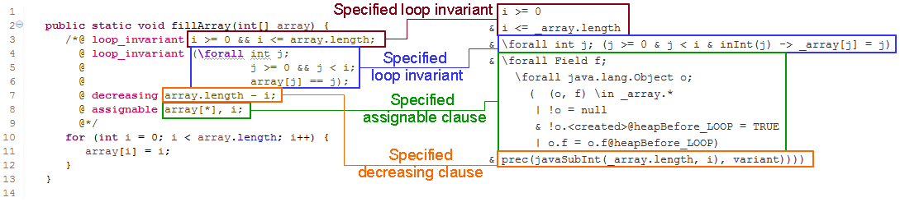

The Java Modeling Language (JML) is a specification language used to specify the expected behavior of Java modules.
The relevant knowledge for this evaluation about JML is explained in the following sections. Please read them carefully before you continue. If you are familiar with JML, you can skip sections you know well.
JML specifications are placed as special comments within the Java source code.
Such comments have to start with the @ character.
JML comments used in this evaluation look as follows:
/*@ ...
@ ...
@*/
A method contract specifies the expected behavior of a method in terms of pre- and postconditions.
Assuming that the precondition is fulfilled when the method is called, the method guarantees that the postcondition is established when it returns.
In JML the keywords normal_behavior and exceptional_behavior are used to specify that a method should terminate normally without a thrown exception or exceptionally otherwise.
Keyword requires followed by a boolean expression defines a precondition while ensures also followed by a boolean expression defines a postcondition.
An expression is basically a normal Java expression as used for instance in if statements.
But additionally the implication operator ==> and quantifiers (e.g. \forall) can be used.
The ensures clause makes a statement about the final state after method execution.
To express changes relative to the prestate before method invocation, the keyword \old can be used.
Keyword \result is used to refer to the method return value.
The last part of a method contract is the assignable clause.
It lists all locations the method is allowed to change.
Keyword \nothing expresses that the method is not allowed to change any location.
Consider the following example.
The method contract of addCredits says that the method should be called in a state in which credits is greater than zero (requires).
Then the method will guarantee that no exception is thrown (normal_behavior) and that the value of acquiredCredits is increased by credits (first ensures).
It also guarantees that the returned value is the new value of acquiredCredits (second ensures).
At last, the assignable clause says that only acquiredCredits and no other locations like firstname or surname are allowed to be changed by the method.
public class Student {
private /*@ nullable @*/ String firstname;
private /*@ non_null @*/ String surname;
private int acquiredCredits = 0;
/*@ normal_behavior
@ requires credits > 0;
@ ensures acquiredCredits == \old(acquiredCredits) + credits;
@ ensures \result == acquiredCredits;
@ assignable acquiredCredits;
@*/
public int addCredits(int credits) {
acquiredCredits += credits;
return acquiredCredits;
}
}
For method parameters as well as for instance and class fields with a reference type its ability to be null needs to be specified.
Keyword nullable allows the null value while non_null forbids it.
In the example above, firstname might be null while surname will be never null.
An invariant is a property used to limit the possible state space of instances. All constructors of a class have to establish the invariant while all methods have to preserve it. It can only be broken temporary within a method execution. Technically, an invariant can be seen as pre and postcondition added to all method contracts.
Let us add the following invariant to class Student.
It says that the value of acquiredCredits is never negative.
/*@ invariant acquiredCredits >= 0;
@*/
private int acquiredCredits = 0;
A loop invariant is a property which needs to hold before a loop is entered and which is preserved by each loop iteration (loop guard and loop body). Thus it also holds after the loop.
A loop invariant in JML consists of three parts:
loop_invariant is used to specify a loop invariant.decreasing specifies a value which is always positive and strictly decreased in each loop iteration. It is used to prove termination of the loop. The decreasing clause is also named variant.assignable limits the locations may changed by the loop.
The following example restricts with the first loop invariant the range of index variable i.
The second loop invariant ensures that all already visited array elements are assigned with the array index.
Termination can be proven with help of the array length and the index variable (decreasing term).
Finally, the loop can change all fields of array (but not array itself) and i.
public static void fillArray(int[] array) {
/*@ loop_invariant i >= 0 && i <= array.length;
@ loop_invariant (\forall int j; j >= 0 && j < i; array[j] == j);
@ decreasing array.length - i;
@ assignable array[*], i;
@*/
for (int i = 0; i < array.length; i++) {
array[i] = i;
}
}
Listed instance fields in the assignable clause give the right to change its values independent from the way how the object is accessed.
Consider for instance the following example. The parameters a and b are aliased (they point to the same object)
as expressed by the precondition a == b. The implementation fulfills the specification,
although the specification allows only to change instance field acquiredCredits on b while the implementation
changes it on a.
/*@ normal_behavior
@ requires a == b;
@ assignable b.acquiredCredits;
@*/
public static void doNothing(Student a, Student b) {
a.acquiredCredits = b.acquiredCredits;
}
To verify if a Java program adheres to its JML specification, KeY translates both into a formula in Java Dynamic Logic. Java Dynamic Logic is also used by the Symbolic Execution Debugger (SED) to present results.
This section gives a short introduction about how to read Java Dynamic Logic.
For the actual verification, KeY uses a Gentzen-style sequent calculus. The main data structure of such a calculus is a sequent like the following:
A, B ==> C, D
A and B) of the sequent arrow ==> hold, at least one formula on the right side (C or D) needs to hold.
The left side contains typically preconditions to assume while the right side contains postconditions to be proven.
The following figure shows on the left the source code from Section 2 Method Contracts and on the right the initial sequent generated by KeY to verify the correctness of method addCredits.
Boxes are used to map the Java/JML constructs to their representation in Java Dynamic Logic.
The following figure shows on the left the source code from Section 4 Loop Invariants and on the right the sequent generated by KeY to verify that the loop invariant is preserved by loop guard and body. Boxes are used to map the Java/JML constructs to their representation in Java Dynamic Logic.
